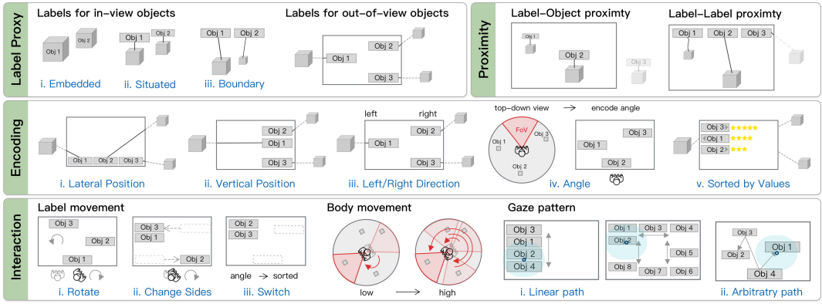
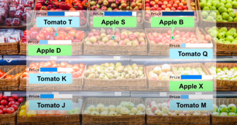
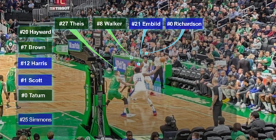
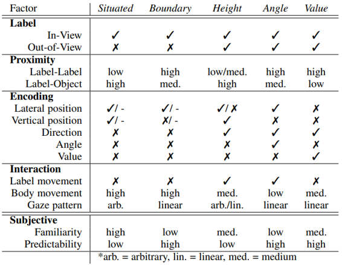
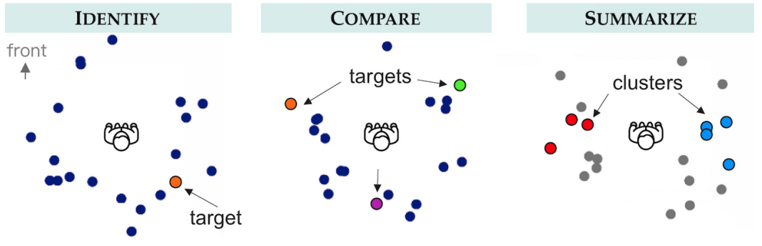
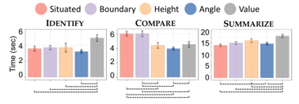
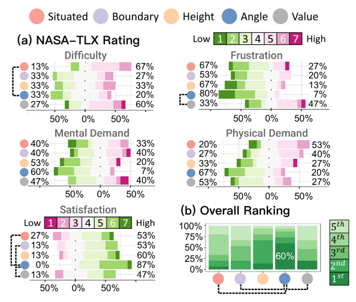

论文：Labeling Out-of-View Objects in Immersive Analytics to Support Situated Visual Searching
作者：Tica Lin, Yalong Yang, Johanna Beyer, Hanspeter Pfister
发表：TVCG 2021
增强现实 (AR) 将数字信息嵌入到物理世界的对象中，让数据展示在现实场景中，从而在现实生活的用户任务中实现实时视觉比较和对象搜索，例如比较产品和在体育比赛中查看分数。虽然已经有关于临场信息检索的 AR 界面的设计研究，但对用于空间环境中视觉搜索任务的 AR 对象标记的研究还很有限。本文确定并分类了 AR 标签设计中的不同设计方面，设计了三种可视化技术用于 AR 中的视野外对象标记，分别编码对象的相对物理位置（高度编码）、旋转方向（角度编码）和标签值（值编码），也实现了两种传统的视野内对象标记技术，包括将标签放置在相应的对象旁边或在 AR FoV 的边缘。最后，通过实验评估了这5种标记技术，并讨论了对未来沉浸式 AR 界面设计的影响。
背景介绍
现实中，我们经常通过视觉比较来搜索感兴趣的元素。可视分析中，我们会通过视觉搜索感兴趣的元素，进而完成一些分析任务，例如识别聚类、比较数值、总结群体的属性等。在桌面端的可视化工具中，搜索结果常以标签或图标的方式标记搜索结果，例如在地图上搜索餐厅。为了避免遮挡原有的可视化信息，可以使用外部标签+连线的技术。另外，也有一些使用概览和缩放的技术。
AR 将数字信息嵌入到现实中，临场分析（situated analysis）成为了近期的火热话题。在临场分析种使用数字标签，可以让用户完成即时临场的信息检索，例如显示周围餐厅的评分、展示体育比赛中运动员的名字、状态等。
与桌面端相比，AR 中的视觉搜索有两点不同。首先，设计者无法操作 AR 显示空间中的所有对象，用户需要通过物理移动和旋转来搜索元素。其次，物理世界中的对象无法像桌面端的视觉元素一样缩放到适应屏幕的大小。因此，一些桌面端技术，例如缩放，无法应用在 AR 场景下。需要研究在 AR 环境中如何放置标签来有效地支持临场视觉搜索。
现有的 AR 标记技术都关注于标记视野内（in-view）的物体，而现实中会存在感兴趣的物体不在视野内（out-of-view）的情况。在没有额外信息的情况下，用户需要主动扫视四周来寻找目标，这是非常耗时费力的。本文的动机是观察视野外标签是否有用，以及是否有些任务只需要视野内标签。
本文的贡献有两点：
- 探索 AR 应用中标签的设计空间，重点是视野外对象标签
- 通过对比实验比较文中提出的5种 AR 标记技术
相关工作
- Situated Visual Search in AR
- Labeling Objects in AR
- Out-of-View Object Visualization
标签设计空间与任务
标签是一种基于文本的视觉表达，被连接在目标对象的锚点上。本文讨论了沉浸式分析中标签设计的重要属性，定义了临场搜索任务的目标和任务，并列举了可能的使用场景。
标签属性
临场分析中标签的主要设计属性包括：
标签代理： 标签指示的目标分为视野内对象和视野外对象两类
相近度：标签与物体或标签与标签间的接近程度
编码：标签在视野中位置编码的方式，可以并排放置、垂直放置、放置在视野的左侧或右侧、根据人与物体间的角度放置、根据数值排序放置
交互：用户可以通过交互、身体移动改变标签的摆放，用户查看标签的模式存在线性和任意两种
其他：用户对标签的熟悉度、对标签位置的预见性等

设计目标 & 任务
设计目标包括：展示物体间的空间关系、为可视分析任务提供额外的信息。
目标任务包括：在多个对象中识别单个目标，比较多个目标，总结所有目标的数据。
使用场景
杂货店购物、空间导航等
 
标签放置设计
基于设计空间，本文探索了不同的标签属性组合，包括两种标记视野内物体方法（临场 Situated，边界 Boundary）和三种标记视野外物体方法（高度 Height，角度 Angle，数值 Value）。

实验
本文通过用户对比试验，比较了文中提出的5种标签设计在面对不同临场视觉搜索任务中的实用性。
实验中，参与者需要完成三类任务：
识别：绿色标签连接的对象是什么颜色？
比较：数值最高的对象是什么颜色？
总结：两个颜色的聚类中，哪个聚类的均值更高？

评估指标
根据完成任务的时间、准确率以及NASA-LTX调查（包括难度、挫折感、心智要求、体力要求、满意度）所搜集的用户反馈总结发现。
时间

NASA-LTX调查

实验发现
- 视野内标签
- 在简单的识别任务中表现良好
- 需要用户扫视整个空间
- 视野外标签
- 在视觉比较任务中提供快速概览和空间线索
- 在标签较多的时候产生视觉混乱
- 基于任务的发现
- 基于角度的标签设计在所有任务中都表现良好，且用户满意度最高
- 视野外标签设计在比较任务中有益
- 基于数值的标签设计不适合识别和总结任务
- 临场和边界设计的表现相近
- 数据规模只会影响比较任务
AR 标签设计考量讨论
- 为视野外对象提供标签可减少比较任务中的旅行（身体移动）次数。
- 精确的空间提示降低了寻路和旅行的成本。
- 精心设计的技术可以降低上下文切换成本。
- 标签-对象接近度对于空间搜索很重要。
- 邻域一致性有助于按组汇总值。
- 边界标签没有表现出优于临场标签的优势。
总结
这篇文章的套路值得设计类的工作参考。面对新问题时，先定义设计空间中的重要属性，寻找其中的设计冲突；再对属性选择进行组合，设计一些方法解决设计冲突；最后评估各种设计方案或方法，得到一些可信的结论和发现。感觉这样的流程做下来，文章逻辑比较严密，不容易被攻击，对解决新问题而设计方法的工作可以参考这篇工作的思路。
✉️ zjuvis@cad.zju.edu.cn